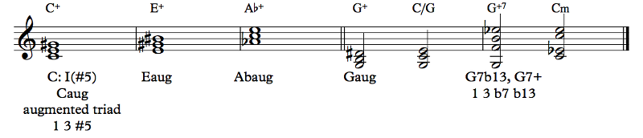

There was a fairly big evolution of musical practice during the 19th century. Of course, there was a fairly big evolution of musical practice always, but something very big changed in the late 19th century, which was that the rules of harmony no longer held the way they had held before. Harmony is essentially a language, and the language during the Common Practice Period was the language of tonality, of chord function. But, from the late 19th century (and even earlier), people started moving away from that rigidity. There were a lot of radical departures from the standard musical language of tonality, but since then we've sort of settled into a musical culture where there's a lot of tonal music — music with a tonic, which we generally find easy to listen to — that doesn't follow the conventions of the Common Practice Period. We can define Common Practice as roughly 1650-1900, but I go a bit more narrowly than that on the near side; if Wagner's famous Tristan Chord, premiered in 1865, is Common Practice, then the practice couldn't have been all that common!
While we now work in a language better referred to as extended tonality, the chords used in Common Practice still form the nucleus of Western harmony, and the chords and concepts (well, most of them) are just as relevant to pop music and to EDM and to jazz as they are to old dead white people music.
The most fundamental harmony in Western music is the triad — specifically, the major or minor triad. Starting from the root, it's 1 3 5 for major and 1 b3 5 for minor. Major and minor triads aren't dissonant (that's why they're so fundamental) and can fill any role, depending on the scale degrees involved, the context, etc. Most of the other chords we'll talk about are essentially variations on the triad. Let's take a look at a few:
Example 6.7
The melody is from an English folk song (specifically, one of the ones included in Lincolnshire Posy, audio links at the bottom), and I just slapped some chords on it. All of these are triads except for the second-to-last chord. I used T, D, and P to analyze the functions of the chords; note that you're actually welcome to disagree with me on this. The roles are not quite clear-cut! And in the line below, I take a step back and analyze entire sections of this melody as being generally tonic sections, pre-dominant sections, and dominant sections. Again, you're welcome to disagree with me. I'm already not so sure I like that measure of P; I think, on a wider scale, the first three bars are all T, the next four all D, and the final chord T. The thing about harmonic analysis is that you have to justify your analysis to yourself, but that doesn't make a different analysis right or wrong.
It is not. Notes that aren't in the chord are called non-harmonic tones.
You... kinda can't. You have to decide whether the note is important. The first chord at measure 1 could be a BbM7, spelled Bb D F A (we'll get to these soon), but I made the call that the A was not a fundamental part of the chord and was just part of the melody.
There's no need to label repeated chords. You'll find that in pop music charts as well. When you see a chord symbol, you just keep playing that chord until you get a different chord symbol.
This is also a good time to talk about inversions. Classical music uses chord inversions quite a bit, and they have special symbols for analysis that come from figured bass notation. In figured bass, a bass line is provided and numbers are given above it that correspond to diatonic intervals above the bass. For example, if you're in D major and you see an E with a 5 3 above it (the numbers are written vertically, with the 5 above the 3), then you'd play E G B, since G is the 3 above the E and B is the 5. But since most chords are triads, shorthands were developed. If you see an E without any numbers, that means E G B; the 5 and the 3 are understood. For a first inversion triad, the intervals are actually a third and a sixth above the bass: from E, you get G and C#, making a first inversion C#dim triad. So, if you see an E with a 6 3 above it, you'd play C#dim/E, E G C#. But, again, shorthands happen: the 3 is understood without writing it, so you'd just write 6. For a second inversion triad, the intervals are a fourth and a sixth; if you see an E with a 6 4 above it, you'd play E A C#, which is A/E. There's no further shorthand. This means that first inversion chords get a 6, and second inversion chords get a 6 4. Looks like this:
Example 6.8
The a, b, and c are British notation for inversions. Yeah, I don't know either. They usually omit the a in root position chords because it's assumed. In this diagram, the left hand is how the figured bass part normally looks, and a basso continuo player would improvise the right hand by looking at the left hand with the numbers.
It's weird. So, composers in Baroque times (roughly 1600-1750) would write a bass part to be played by all the bass instruments and the harpsichord, and this group was called the basso continuo. The bass instruments would just read the notes, but the keyboard player would play chords, do some improv, stuff like that.
They weren't wild jazz solos, if that's what you're thinking! But a skilled accompanist didn't need to have the full part written out for him to be able to play a decent accompaniment, and baroque composers thought this was OK. This is actually still true today, right? If you're singing with a guitar player, just give the guitar player the chords, and he or she will figure out how to voice them, what little gestures to make (like hammer-ons and pull-offs), what rhythms to play, and so on.
Triads in a key can have function, but they can also not have any function. Here's another example from Lincolnshire Posy, called Lisbon:
Example 6.9
It was not important to this example? The trumpets are also supposed to be muted. Whatever. Listen to the original!
This passage is done entirely in triads. The melody is in the bassoon and in the third trumpet, and the other two trumpets complete a major triad for every note. Since every note in these chords moves the same way from one chord to the next, we call these parallel chords. We could put Roman numerals down for each chord, but it's actually pretty clear, I think, that the chords don't actually have any function. How, for example, does the C major chord at the end of measure 3 lead into the Ab major chord at the downbeat of measure 4? It doesn't, that's how. Common Practice music would never do this, but modern music does, all the time. Lisbon isn't atonal; it's very clearly in Ab major. Just look at the melody! (If you listen to the full recording, you'll see that the next verse of the melody has more traditional harmony.) But these chords are here to sound pretty, not to do anything.
You're right, they don't! And also, they don't have to sound nice either. When we get more into harmonic analysis, we'll see more examples of this kind of thing. We say that chords that do behave in tonic/dominant/etc. ways exhibit functional harmony. These chords, however, don't.
Now, we're going to go seemingly out of order, but there's a reason for it. The next thing we'll look at is kind of a completion of the triad:
If you stack another third on top of a triad, which makes a seventh with the root, you get a seventh chord. There are many varieties of seventh chords depending on the quality of the triad and the added seventh, but we're going to focus on one of them specifically for now. The dominant triad (the triad built on the dominant of the scale) contains scale degrees 5 7 2 (and it's generally a major triad even in minor, which is why harmonic minor is a thing), so the seventh chord built on the dominant contains scale degrees 5 7 2 4. 5 7 2 is a major triad and the 4 makes a minor seventh with the root. We call this kind of chord a dominant seventh. Counting from the root of the chord, it contains the 1, 3, 5, and b7, and it looks and sounds like this:
Example 6.10
As a word of explanation, we first have the four inversions (root position, first, second, and third inversions) of the dominant 7th chord. In pop notation, a dominant 7th chord is just written with a 7, so C7 is a C dominant seventh, spelled C E G Bb. Sometimes it's necessary to clarify that it's a dominant 7th and not some other kind of 7th, so I'll write something like Edom7 to refer to an E7. The figured bass numbers for the 7th chord (any 7th, not just the dominant) are 7 5 3 for root position, of which the 5 and 3 are understood so we just write the 7, 6 5 3 for first inversion, of which the 3 is understood so we just write 6 5, 6 4 3 for second inversion, of which the 6 is understood so we just write 4 3, and 6 4 2 for third inversion, of which the 6 is understood so we just write the 4 2. Yeah, it's confusing, but these are actually the last inversion numbers that will come up. Again, in British notation, they just write b, c, or d to indicate first, second, or third inversion, with the a symbolizing root position when necessary.
Now, ready for some total bullshit?
Roman numeral notation goes for the diatonic chord, so the only dominant seventh that makes sense in Roman numeral notation is the seventh chord on the actual dominant, V7. If you write, say, I7, that's not a dominant 7th. That's a major 7th, which is not the same thing (and which we'll talk about shortly).
You said you were ready! So if I did want to talk about a dominant 7th on scale degree 1, I'd write it as Idom7 to make it explicit. But pop notation does not have this limitation. C7 is C dominant 7th, A7 is A dominant 7th, etc., regardless of key.
Classically, the dominant 7th is dissonant (actually, all 7th chords are, since the 7th is a dissonance), and the dominant 7th's dissonance is especially important because it contains the tritone in scale degrees 7 and 4 (again, this tritone still exists in minor because the V chord comes from the harmonic minor). In the previous chapter we talked about resolving the tritone, but it's really all about voice leading: the 7 resolves to 1 because it's the leading tone, and the 4 resolves to 3 (or b3) because that's what the 4 does. I showed some of these resolutions in Example 6.10.
Yeah, just because the B wants to resolve to the C doesn't mean that it gets what it wants. This is actually kind of unsatisfying, but the idea is that we get the satisfaction from the F - E resolution and it overrides the lack of hot B - C action. We haven't covered enough so far to fully explain the problem, but look at the first resolution. You have a full G7, with the B and the F resolving to C and E, respectively. The bass notes can't change because we want both chords in root position. So we end up with an incomplete C major triad, since the D has to go to the C or the E, and the G gets left out. In the second resolution, we decided to skip the D in the G7 chord (the fifth is usually the least necessary note, if you have to find one to skip) and doubled the root G instead, and now we can get a full C major chord in the resolution, but at the expense of a full G7 in the setup. In the third example, we solve this problem... by having the B simply not resolve the way it wants to go, which is another problem. Music theory is full of these voice leading challenges. Pop musicians generally get around these challenges by not giving a shit.
Oh no no, you misunderstand! These rules about where voices lead (aka voice leading) make for smooth music, but pop music isn't trying to be smooth, not in this sense. The roughness of pop music actually works very well with a relaxing of the rules of voice leading. Now, do pop musicians care about voice leading? YES. That's important when writing melodies and bass lines, countermelodies, and so on. It's just that smoothly connecting one chord to the next is not usually part of the pop music's harmonic language.
You still do, sorry. As a pop musician you have other options, but you should still know the smoothest way to do it.
The third line in Example 6.10 is just the chords from Example 6.6 written out as whole notes. In this chord, we have V65 - I instead of the root position V7 - I. Usually, root positions chords are stronger than inverted chords, but Bach didn't feel the need to do that here, opting instead for a smooth bass line. The second chord is also a 7th, but not a dominant 7th; since it's in third inversion, with the 7th in the bass, it gets the 42 numbers.
A non-dominant seventh:
These are the diatonic 7th chords:
Example 6.11
In this section we're going to focus only on the major 7th and minor 7th; we'll cover the diminished and half-diminished 7ths in another section. All 7th chords are considered dissonant, classically, and minor and major 7th chords are no exception. They're relatively rare compared to dominant 7ths, except really the ii7, the iiø7, and the viio7 (and their inversions). Except for chords where the base triad is already dissonant (so, the o7 and ø7 chords), the 7th adds a dissonance that isn't there in the triad, and as such, it's usually not a fundamental difference but more of a color tone.
The 7th is usually not essential to the function of the chord, only to the sound. The seventh can often provide a dissonance that needs to be resolved in the next chord, thus providing some forward motion, but the identity of the chord is still the triad. When you have a IV7, for example, that's still a IV chord, and it behaves like a IV chord would, except that it has that other note in it too.
Classically, dominant 7ths are used almost entirely as dominant chords, and non-dominant 7ths are used entirely as pre-dominant chords (or pre-pre-dominant, etc.). Non-classically, well... we'll get to that!
One last bit about these 7th chords, for now: you can have (classically) a dominant 7th that resolves in a V - I relationship where the I is not the tonic. For example, you could be in C major, and you see D7 - G. That D7 is known as a secondary dominant, and we notate that with Roman numerals as V/V, read "five of five". So, D7 - G7 - I would be V7/V - V7 - I. E7 - Am would be V7/vi - vi. A7 - Dm7 - G7 - C would be V7/ii - ii7 - V7 - I. The concept of making some chord that's not the tonic briefly act as a tonic is called tonicization, and it's basically just a very brief modulation. This is extremely common in all genres, including pop genres, and you could argue that the entire harmonic basis of jazz is ii - V - I in different keys. We'll talk about secondary dominants more when we go in depth into functional harmony, which is not this chapter.
Nope.
The world may never know. It is idiotic.
Diminished chords are a little special:
Example 6.12
The perfect fifth makes chords feel rooted. But diminished chords don't have them, so they don't quite feel rooted. The diminished triad goes 1 b3 b5, the half-diminished 7th goes 1 b3 b5 b7, and the fully-diminished 7th goes 1 b3 b5 bb7.
Well... no, because the majority of the time, this d7 interval is between the 7 of the scale and the b6. See, the viio chord is known as the leading tone triad, and it's weird because of that tritone. But, really, it's not so weird. See the third line there, the first and second chords? The viio is actually just a V7 with the root missing! The viio is a dominant chord, just like the V7. It doesn't have to behave in quite the same way, voice-leading-wise: in a V7, the 7th of the chord — the 4 of the scale — always resolves down — to the 3 of the scale, or b3 in minor. This is because the m7 between the root (5 of the scale) and seventh (4 of the scale) is the dissonance that's being resolved. Since the root is missing in a diminished triad, scale degree 4 is free to resolve up to 5. (There are many, many caveats to this, which we'll cover at length in the appropriate chapters.)
The viiø7 in major and viio7 in minor (or not in minor, that's fine too) are also just rootless V7's and should generally be treated that way. We'll talk about them a little later in this chapter, but the dominant 9th chord is just a dominant 7th with an added 9th (same as the 2nd), and the 7b9 is a dominant 7th with an added b9. These 9ths don't actually change anything about the chord; they're just dominant 7ths that have picked up a little color.
The cool thing about the diminished 7th chord (or at least it was cool in the 18th century; these days it sounds kinda boring) is that it's symmetric. The dim7 chord breaks the octave into four equal parts. This means that G#dim7, Bdim7, Ddim7, Fdim7, Abdim7, Cbdim7, etc. are all the same chord (in 12-TET, at least), just spelled differently. In particular, there are only three distinct diminished 7th chords: Cdim7, C#dim7, and Ddim7. Any other dim7 is enharmonic to one of these three. This also means that Bdim7, which is viio7 in the key of C, can also be viio7 in the keys of Eb, Gb, and A. In classical music, the dim7 is often used to modulate between keys. You can also resolve the dim7 down a half step to another dim7 and move through keys this way. Here's an example:
Example 6.13
The first resolution above is just a standard viio7 - i. The second is a chain of descending dim7 chords, and that chain can actually go for as long as you want. I resolved to keys where I didn't need to change the spelling of the dim7 chord, but with the first sequence, I could have ended up on Eb or Gb or A; with the second, on Bb, Db, or E; with the third, on Ab, B, or D. Notice also that the last chord in the first and second sequences is actually a dominant 7th rather than a dim7. That's another common resolution.
Note the mechanism by which these chords "resolve" (I put that in quotes because they don't do it right away, do they?). The actual resolution has the 7 - 4 tritone resolving to 1 - 3 or 1 - b3 (due to the b6 in the chord, it's more used in minor than major, but there's no reason why it can't be in either). But there are two tritones in the dim7 chord, and either of them can be interpreted as 7 - 4, resolving to 1 - 3 (or 1 - b3), or as 4 - 7, resolving to 3 - 1 (or b3 - 1). However, in a chain of dim7's, the 7 - 4 resolves to b7 - 3, which is the 4 - 7 in a new key. That resolves to 3 - b7, which is 7 - 4 in a new key. And so on. As an example, B - F in the key of C resolves to Bb - E in the key of F, which resolves to A - Eb in the key of Bb, which resolves to Ab - D in the key of Eb, and so on 'round the Circle of Fifths. The other two notes, the 2 and b6, are kind of along for the ride.
Actually, if you look back at Example 6.12 one more time, you'll notice the iio and iiø7 chords that I haven't talked about. That's because they have pre-dominant function rather than dominant. In a viio7 chord, 2 - b6 resolve to b3 - 5 or 1 - 5, but in a iiø7 chord, the tritone usually resolves to 2 - 5. You usually find the iiø7 chord in first inversion, so it's actually iiø65, and generally the 2 is above the b6, so the b6 - 2 tritone resolves to 5 - 2 in the V7 chord that follows.
One last note about diminished triads: they're not balanced. All the notes are kind of bunched up when the chord is in root position. Therefore, you almost always find it in first inversion instead, or sometimes second but usually first. If your bass line really calls for it, it might make sense to put it in root position, but usually that's just not a nice, smooth sound.
This is also a secondary dominant. That G#dim7 is the viio7 chord in the key of Am, which is vi in C.
Oh, shit, you're right. Well, not really — just because vi isn't in the key doesn't mean you can't use it. But you're still right that it's not the natural choice. Really, instead of ii, it should be V/V, and instead of vi, it should be V/V/V ("five of five of five"). So viio65/vi should really be viio65/V/V/V.
Which is why I just stuck with viio65/vi. But this does highlight the underlying harmony. It looks like the dim7 chords are just moving down in parallel, but actually they're moving around the Circle of Fifths. Each has a dominant relationship to the next. They're just missing their roots!
Here's another fun effect of the symmetry of dim7 chords. The relative major of C minor is Eb major, a minor third away. Bdim7, the viio7 in C, is enharmonically the same as Ddim7, the viio7 in Eb. Therefore, you can also use the dim7 chord to smoothly go between relative major and minor!
Before we move on, I just want to point out that there are other uses of the dim7 chord that we haven't discussed yet. We will, though!
Augmented chords are symmetric too:
Example 6.14
The diminished 7th is what happens when you split the octave into four. The augmented triad is what happens when you split it into three. Caug, Eaug, and Abaug are the same chord, enharmonically. There are therefore only four different augmented triads. While the augmented triad is generally spelled 1 3 #5, there are times when it makes more sense to spell it 1 3 b6. You could make a case for the b6 actually being a b13 (we'll talk about that soon). It depends on what the individual voices are doing. I gave two examples.
Classically, the augmented triad is used mostly as an altered dominant chord, spelled 5 7 #2. The #2 is a leading tone to the 3, so this gives the V+ chord more oomph than the plain V chord. Non-classically, the augmented triad is useful to create an unsettled feeling. The augmented triad also doesn't have a perfect fifth and it's symmetric, so it feels like it's not rooted, similar to the dim7 chord.
Augmented chords are actually pretty rare in practice, but they do pop up. Here's an example, from the Ending Theme to Super Mario World by Koji Kondo:
Example 6.15
Yeah, but remember Rule 0? It applies to analysis too, though in a somewhat limited fashion. I think you can justify either interpretation. I personally hear it as a B+7 chord, where the A in the melody is the 7th of the chord, and that generally goes to iii. It doesn't go to iii here, but I hear that as a subverted resolution; the chord meant to go to iii but didn't. On the other hand, it's just an inversion of the V+ chord from measures 3 and 4, and that one's definitely a V and not a V/iii. It goes to show how the symmetry of the augmented triad can be used to create some ambiguity.
While we're at it, let's talk a bit more about this piece. It starts out with a ii - V - I. ii - V is a very common motion in jazz, whether it ends up on the I or not. We see that again in measures 9-12, where we have a iv - V in the key of the ii that doesn't resolve to ii but instead to IV. iv also has pre-dominant function, like the ii; IV - V - I (or iv - V - i in minor) is pretty much equivalent to ii - V - I (or iio - V - i in minor). Also in measures 5-12 we see an interesting motion that guides this chord progression. The chord at measure 5 is C G E; at measure 7, B G D#; at measure 9, Bb G D; at measure 11, A G C#. One note, the G, stands still, while the other two go down chromatically. Chromatically descending (or ascending, but mostly descending) lines are often very attractive, and if you can find an excuse to worm them into your chord progression, you have this automatically satisfying motion.
What goes down must come up, and that chromatically descending material in measures 5-12 gets turned around in 13-16, now at faster harmonic tempo.
Harmonic tempo is the speed of harmonic changes. In measures 1-12, there's one chord every two bars, but now there's a chord every 1 bar, so we say that the harmonic tempo has doubled. A related concept is harmonic rhythm, which is a more general way of referring to how often the harmony changes.
In measures 13-16, we have IV - viio/V - I64 - V7/ii. This is actually a pretty common ragtime progression, generally followed by ii - V - I (here it's V9/V - V - I, with the I in the next section at 21; V9/V is just a chromatic alteration of ii). The bass goes up by step, not quite chromatically but pretty close. The viio/V actually has another interpretation. At other times, that I64 would actually be a dominant chord, resolving back to V before actually resolving to I, but here, it doesn't have that tendency. This is because the bass going up a scale is a much more powerful tendency. So you can call the viio/V by another name: a common-tone diminished chord or CTo. This is the diminished 7th chord built on the #2 of the scale, or at least a diminished triad on the #4 like here, and it has a 1 in the chord. It resolves not to the V but to the I, and that's what this chord does! Example 5.54 in the previous chapter, measure 23, has an example of the CTo7 in action.
In measures 17-19, we just have the V9/V - V, which resolves to I at measure 21. Measure 20 isn't really a resolution; I don't think it makes a whole lot of sense to look at that measure harmonically.
In measures 21-35, we have the second half of this verse (there's supposed to be a transition at 35 to the next section; I cut off before it). Melodically, it's very similar to the first half (5-20). Things start changing at 32; while the melody has a lower E at 16 (it's in a higher instrument, so we're talking relatively), it goes up for a climax at 32. The harmony in 17-20 is V9/V - V, ending on the V. Yes, it goes to the I at 21, but that's already the next bit. So we can say that the first half ends on the V, basically asking a question. We call this a half cadence. On the other hand, at 33-35 we have V9/V - V7 - I, which we call a full cadence. (You could say that it's a V13 rather than a V7. I won't stop you.) Much more about cadences later.
One final thing to notice about this piece, the flute part does a weird thing. The flute starts on the melody at measure 5, but at 21, the trumpet takes over the melody (I actually used a flügelhorn sound; I thought the trumpet sounded weird). So the flute, with nothing to do, plays a countermelody, which is another melody that happens at the same time as the primary melody. Countermelodies are usually contrasting to the main melody. This one, for example, moves when the main melody doesn't. Measure 24, for example, the main melody isn't doing much, so the countermelody has a thing. 26, 30, 32, same thing. The main melody has lots of short notes; the countermelody has long notes. Countermelodies are a great way to add interest to a song. If there are vocals, you can even have the countermelody feature different lyrics!
As a final note about augmented chords, the symmetry of the augmented triad means that there are three different keys it can resolve to. G B D# can resolve to C, E, or Ab (with appropriate enharmonic corrections). And just like diminished 7th chords can resolve down a half step to another diminished 7th chord, augmented triads can resolve up a half step to another augmented triad!
Example 6.16
It honestly gets tedious to keep track of which notes should be spelled how in augmented chords. This is when you decide that spelling is perhaps not that critical in real life.
::shrugs:: We have some much cooler chords coming up, though:
These guys are not related to augmented triads. Augmented chords have an augmented fifth; these chords have an augmented sixth. They have funny names, too:
Example 6.17
Classically, an aug6 chord is always built on the b6 of the scale, and it always resolves to either the V or I64 (or i64 in minor). It can resolve to the V7 as well if you believe hard enough. These chords consist of the b6, the 1, and the #4, and another note, which can be either a doubled 1, a 2, or a b3, and the name of the chord indicates which fourth note was added.
No. They're just names. You can remember them a bit more easily if you know your European geography; the fourth note is higher the farther north the country is.
Pretty sure that's not a thing.
The Italian 6th has a 1, the French 6th has a 2, and the German 6th has a b3.
No, that's on purpose. The English 6th isn't its own chord. It's just another name for the German 6th, but spelled a little differently. By the way, this so-called English 6th features a very rare interval: a doubly augmented fourth, between the b6 and #2. You don't see those very often!
Classically, the aug6 is a pre-dominant chord. In extended tonality, it's often built on the b2 instead of the b6, so it goes to I instead of V, making it dominant. This is the essence of tritone substitution, which we'll talk about... eventually, I guess? But classically, it's pre-dominant.
Sure: they're enharmonic to dominant 7th chords! They just resolve differently. In C, the Ger+6 is enharmonic to Ab7, but the Ab7 is the V7 of Db, while the Ger+6 resolves to G. Remember in the last chapter when we were talking about the tritone, how it could resolve in different directions? C - F# is a 4 -7 that resolves to B - G, while C - Gb is a 7 - 4 resolves to Db - F. This is what's going on here. Ab7 is Ab C Gb (skipping the fifth for now), and the C Gb resolves to Db F; the Abaug6 is Ab C F#, and the C F# resolves to B G.
Actually, the main mechanism in the aug6 chord is not the tritone but the A6 between the outer voices (though it can of course show up in inversion), which resolves outward to an octave (though that resolution can be subverted to a m7 instead, creating what sounds like parallel dominant 7th chords).
The French 6th is one of the most unique sounds in classical music. This chord is actually also symmetric — the Fr+6 built on Ab is enharmonically equivalent to the Fr+6 built on D. Enharmonically, you could call it Ab7b5. But you could actually, non-enharmonically, call it a D7b5. Do you see where I'm going with this?
D7b5 is D F# Ab C, a D dominant 7th where the 5 is lowered. That's the same notes (in inversion) as the Fr+6. The It+6 is also just a D7b5, just missing the root. And the Ger+6 is just a D7b5b9, also missing the root. You can think of these augmented 6th chords as rooted not on Ab but on D. That makes them secondary dominants!
In truth, the aug6 chords don't really have a root. They're like diminished or augmented chords in this respect. Augmented 6th chords arise out of voice leading considerations; they just happen to sound nice enough that they're given a name.
This (mostly) completes the list of Common Practice chords. There are really not very many, at least not compared to the immense harmonic wealth that was unlocked subsequently, starting in the 19th century. I left out some extended chords that come up from time to time; you can really voice chords however you want (in Common Practice) so long as they don't run afoul of the Common Practice conventions. Take care of your dissonances, and it really doesn't matter what else you do. But the story gets much more interesting once we get out of Common Practice...